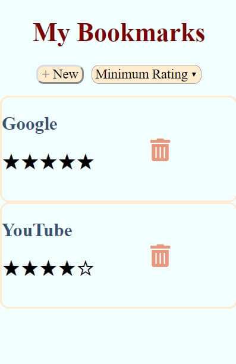
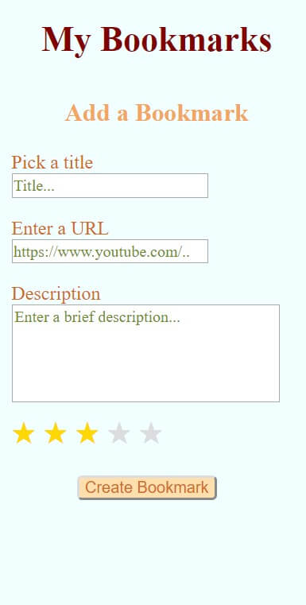

WELCOME TO THE STORY OF ORKUN
Some things to know about me...
I am an aspiring full-stack web developer whose favorite JavaScript library is REACT. My social life consists mostly of spending time with my wife and son, playing the guitar, and traveling the world.
My background in web development began with Thinkful’s Engineering Immersion Program. Coding, since then, has been a passion of mine because making ideas come to life through technology is extremely satisfying.
I have a lifetime full of experience of being a team player by playing in various music bands and sports teams, I have been a member of various clubs and organizations throughout my college career, and I am extremely passionate about coding. This is why I am confident I will be a great asset to any team of web developers.
Bookmarks
This app allows users to save certain websites by creating bookmarks with descriptions and ratings. It also allows them to filter their bookmarks by their ratings. It's built for people who demand quick access to their favorite websites simply by filtering their bookmarks with five stars, which will conceal those rated less.
I have built this app as Google Chrome Bookmarks does not have a feature that allows users to add descriptions to their bookmarks and to rate them.
Technologies used: